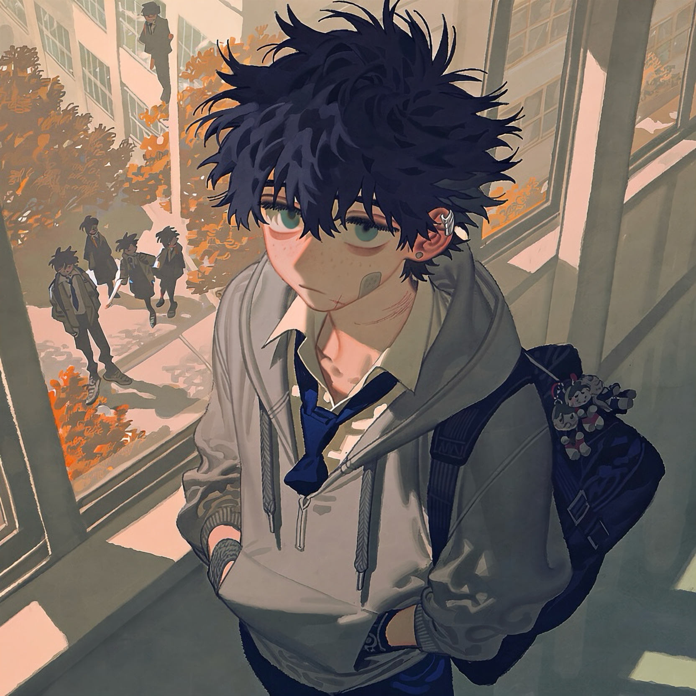

CHARACTER RECORD / 032STATUS: AVAILABLE

✦IMAGE
NOT FOUND
NOT FOUND
時雨
✦ WITH OUTFIT服装込み
PROMPT DATATXT / 032
masterpiece, best quality, ultra detailed, intricate details, boy, young teenage boy, middle school student, adolescent, 1.4::slender youthful build, narrow shoulders, delicate facial features, slightly lanky proportions::, 1.5::short dark navy hair, tousled short hair, uneven fringe, soft hair texture, slightly messy crown::, 1.3::large muted teal eyes, slightly drooping eyes, long eyelashes, faint freckles across nose, subtle eye bags::, 1.3::small adhesive bandage on cheek, faint healed scratch on chin::,
1.4::oversized gray hoodie, white collared shirt, loosely knotted dark blue school tie, navy school trousers, worn sneakers, backpack slung over one shoulder::, 1.2::small silver ear cuff, fabric wristband::, 1.5::quiet reserved expression, observant gaze, slightly melancholic atmosphere, awkward adolescent charm, introspective personality::,
PROMPT NOT ENTERED